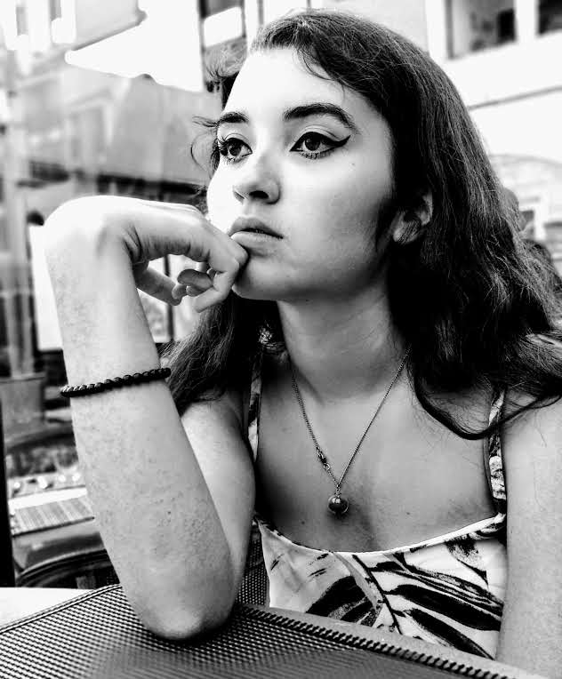

Je conçois vos produitset univers visuels.
Tania André, designer UI/UX et brand designer. Diplômée du BUT MMI, en Master 2 Conception, Création et Arts Multimédias : de la recherche utilisateur à la création de contenus multimédias, je donne une identité cohérente aux produits et aux marques.

Du design d'interface à l'identité de marque
Ce que je cherche, et ce que je peux apporter à une équipe créative ou produit.
Mon objectif
Me spécialiser dans le design UI/UX et le brand design : concevoir des interfaces claires et accessibles, et créer des contenus multimédias (identité visuelle, supports print, motion, vidéo) qui racontent une marque de façon cohérente.
Stage de 6 mois
Je recherche un stage de 6 mois (et non une alternance) comme UI/UX designer, webdesigner ou brand designer.
Ma boîte à outils
Mes projets
Onze réalisations, de l'identité visuelle à l'interface. Cliquez pour voir le contexte, mon rôle et les livrables.
Compétences
Parcours
Master 2 Conception, Création et Arts Multimédias
Université de Franche-Comté, Master Produits et Services Multimédia. Année de Master 1 validée. Design d'expérience, création multimédia et conduite de projet.
BUT Métiers du Multimédia et de l'Internet
IUT Nord Franche-Comté, Montbéliard. UX/UI, audiovisuel, communication digitale et bases du développement web.
Un stage de 6 mois à pourvoir ?
Écrivez-moi, je réponds vite. Vous pouvez aussi me joindre à taniaandrepro@gmail.com ou sur LinkedIn.
Mon CV